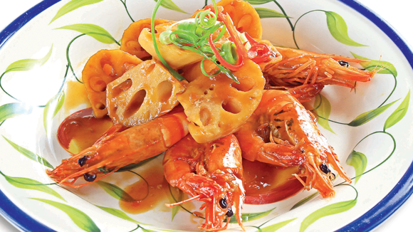

Củ sen kho tôm

- Khẩu phần 4
- Chuẩn bị 25 phút
- Thực hiện 10 phút
Nguyên liệu
- 200g tôm sú
- 300g củ sen
- 10g tỏi băm
- 2 thìa cà phê hạt nêm từ Nấm và Rong biển
- 2 thìa cà phê nước mắm chấm
- 2 thìa cà phê đường
- 1 thìa súp dầu ăn
Hướng dẫn thực hiện
- Tôm bóc vỏ bỏ đầu hoặc để nguyên tùy thích. Củ sen bào vỏ thái lát vừa
ăn
- Phi thơm tỏi với dầu ăn, cho củ sen và tôm vào xào nhanh, khi tôm vừa
chín thì cho hạt nêm từ Nấm và Rong biển, nước mắm chấm , đường vào,
nếm vừa ăn. Đổ nước vào xăm xắp mặt củ sen và tôm, kho đến khi nước sánh lại
là được.